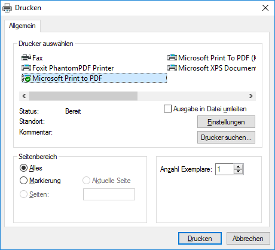
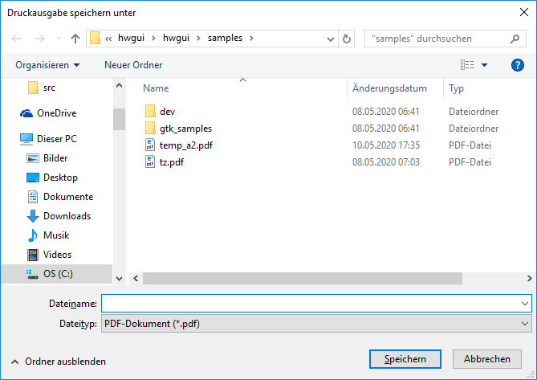
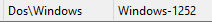

| Home page | HwGUI 2.22 reference manual | |
| prev | Alexander S.Kresin, June 2022 | next |
This section describes all of the classes that make up the HwGUI. In the description of the classes I omitted the variables that are used only for the internal needs of the class methods. Redefine() methods also omitted as outdated and not recommended for use.
Variables, marked as (RW), may be set and read, (R) - read only, those, which are not marked, shouldn't be used in programs.
The following schema illustrates the hierarchy of classes, currently implemented in HwGUI.
It is a base class for all HwGUI classes.
DATA
objName (RW) a name of an object to identify it in user programs
cargo (RW) a variable, which you may use as you need
It is a base class for windows (HWindow), currently it is implemented in WinAPI version only.
Do not create instances of HCustomWindow. It serves as a base class for all windows and controls. In other words, HCustomWindow provide basic variables and methods, which are inherited by all windows and controls. Every subclass adds its own variables and methods, modifies inherited, if needed, and use others as is.
DATA
CLASS VAR oDefaultParent
title (RW) a title/caption of a window or a control
nTop, nLeft (RW) coordinates of a top left corner
nWidth, nHeight (RW) a size: width and height
tcolor, bcolor (RW) text and background color, respectively,
oFont (RW) a font, an object of HFont class
bInit (RW) codeblock, performed during initialization
bDestroy (RW) codeblock, performed during destroying
bSize (RW) codeblock, performed when a size is changed
bPaint (RW) codeblock, which paints the element
bGetFocus (RW) codeblock, executed when it receives focus
bLostFocus (RW) codeblock, executed when it looses focus
bOther (RW) codeblock, executed for all messages
handle (R) handle of a GUI element
oParent (R) an object of a parent window or control
type (R)
brush (R)
style (R) WinAPI style
extstyle (R) extended WinAPI style
lHide (R) .T., if the element is hidden
aControls (R) an array with controls objects, belonged to this
window or container
aEvents, aNotify
HelpId
nHolder
METHODS
AddControl( oCtrl )
DelControl( oCtrl )
AddEvent( nEvent,nId,bAction,lNotify )
FindControl( nId,nHandle )
Hide()
Show()
Move( x1,y1,width,height )
SetColor( tcolor, bColor, lRepaint )
Internal:
onEvent( msg, wParam, lParam )
End()
It is a base class for all windows and dialogs, do not create instances of it.
DATA
CLASS VAR aWindows (R)
CLASS VAR szAppName (R)
CLASS VAR aKeysGlobal (R)
lUpdated (RW) .F., if any of GET items is changed
lClipper (RW)
oBmp (RW)
bCloseQuery (RW)
bActivate (RW) codeblock, performed one time while window activation
tColorinFocus (RW) text color for an Edit control, which has focus
bColorinFocus (RW) background color for an Edit control, which has focus
bScroll (RW) codeblock, performed during window scrolling
menu (R)
oIcon (R)
GetList (R)
KeyList (R)
nLastKey (R)
aOffset
oEmbedded
oPopup, hAccel
METHODS
New( oIcon, clr, nStyle, x, y, width, height, cTitle, cMenu, nPos,
oFont, bInit, bExit, bSize, bPaint, bGfocus, bLfocus, bOther,
cAppName, oBmp, cHelp, nHelpId, bColor )
FindWindow( hWnd ) - Seeking a window by the handle, returns a window object
GetMain() - returns a main window object
Center() - moves the window in the center of the screen
Restore() - restores the normal window size
Maximize() - expands window to full screen
Minimize() - minimizes window
SetTitle( cTitle ) - set a new window title
Close() - closes windows, deletes it with all controls
Internal:
AddItem( oWnd )
DelItem( oWnd )
A class of a main window. the corresponding command: INIT WINDOW MAIN
DATA
CLASS VAR aMessages
nMenuPos
oNotifyIcon, bNotify, oNotifyMenu
lTray
METHODS
New( lType, oIcon, clr, nStyle, x, y, width, height, cTitle, cMenu, nPos,
oFont, bInit, bExit, bSize, bPaint, bGfocus, bLfocus, bOther,
cAppName, oBmp, cHelp, nHelpId, bColor, nExclude )
Activate( lShow, lMaximized, - Activates a window, the corresponding
lMinimized, lCentered, bActivate ) command: ACTIVATE WINDOW
InitTray( oNotifyIcon, bNotify, oNotifyMenu ) (Windows only, on GTK available, but empty with no function)
GetMdiActive() - returns an active MDI child window object
DEICONIFY() (LINUX/GTK only) - maximize
ICONIFY() (LINUX/GTK only) - minimize
Internal:
onEvent( msg, wParam, lParam )
A class of a MDI child window. the corresponding command: INIT WINDOW MDICHILD
DATA
CLASS VAR aMessages
METHODS
New( oIcon, clr, nStyle, x, y, width, height, cTitle, cMenu, oFont,
bInit, bExit, bSize, bPaint, bGfocus, bLfocus, bOther,
cAppName, oBmp, cHelp, nHelpId, bColor )
Activate( lShow, lMaximized, lMinimized, lCentered, bActivate )
Internal:
onEvent( msg, wParam, lParam )
DATA
CLASS VAR aDialogs (R)
CLASS VAR aModalDialogs (R)
lResult (RW)
lClipper (RW) IF .T., ENTER allows to move between GET items
lExitOnEnter (RW)
lExitOnEsc (RW)
lClosable (R)
lModal
nInitState
METHODS
New( lType, nStyle, x, y, width, height, cTitle, bInit, bExit, bSize,
bPaint, bGfocus, bLfocus, bOther, lClipper, oBmp, oIcon, lExitOnEnter, nHelpId,
xResourceID, lExitOnEsc, bColor, lNoClosable )
Activate( lNoModal, lMaximized, lMinimized, lCentered, bActivate )
FindDialog( hWnd )
GetActive() - returns a GET element object of this dialog, which owns input focus
Close()
Internal:
AddItem()
DelItem()
onEvent( msg, wParam, lParam )
DATA
Anchor (RW) a numeric value, which determines autoresizing
of a control due to a parent window resizing
tooltip (R)
id (R)
lInit
METHODS
New( oWndParent,nId,nStyle,nLeft,nTop,nWidth,nHeight,oFont,bInit,
bSize,bPaint,ctoolt,tcolor,bcolor )
Disable()
Enable()
Enabled()
SetFocus()
GetText()
SetText( c )
Refresh() - virtual method
Internal:
Init()
NewId()
End()
DATA
active (RW)
lChanged (RW)
lDispHead (RW) Should I display headers ?
lDispSep (RW) Should I display separators ?
lBuffering (RW)
freeze (RW) Number of columns to freeze
aArray (RW) An array to browse
oStyleHead (RW) A HStyle object to draw the header
oStyleFoot (RW) A HStyle object to draw the footer
oStyleCell (RW) A HStyle object to draw the cell
headColor (RW) Header text color
sepColor (RW) Separators color
aPadding (RW)
aHeadPadding (RW)
lInFocus (RW)
tcolorSel, bcolorSel (RW) Text and backgound color of a selected row
httColor, htbColor (RW) Text and backgound color of a selected cell
bSkip, bGoTo, bGoTop (RW)
bGoBot, bEof, bBof (RW)
bRcou, bRecno, bRecnoLog(RW)
bPosChanged, bLineOut, (RW)
bScrollPos, bHScrollPos (RW)
bEnter (RW)
bKeyDown (RW)
bUpdate (RW)
bRClick (RW)
lEditable (RW)
lAppable (RW)
lAppMode (RW)
lAutoEdit (RW)
lAdjRight (RW) Adjust last column to right
winclass (R)
aColumns (R) HColumn's array
nRecords (R) Number of records in browse
nCurrent (R) Number of a current record in a browse
nRowHeight (R) Predefined height of a row
nRowTextHeight (R) A max text height in a row
rowCount (R) Number of visible data rows
rowPos (R) Current row position
rowCurrCount (R) Current number of rows
colPos (R) Current column position
nColumns (R) Number of visible data columns
nLeftCol (R) Leftmost column
nHeadRows (R) Rows in header
nFootRows (R) Rows in footer
recCurr (R)
lUpdated (R)
lAppended (R)
oPenSep, oPenHdr, oPen3d (R)
brushSel (R)
lSep3d (R)
aSelected (R)
nPaintRow, nPaintCol (R) Row/Col being painted
alias (R) Alias name of browsed database
x1,y1,x2,y2 (R)
width,height (R)
aColAlias
aRelation
lResizing
lCtrlPress
DATA nHCCharset INIT -1 Charset for MEMO EDIT, -1 for use default (set default value = 0)
For compatibiltity purposes, do not modify
with UTF-8 (0).
For Windows:
204: Russian
15 : IBM 858 with Euro currency sign (€)
--- International Language Support for internal dialogs ---
cTextTitME (RW) "Memo Edit"
cTextClose (RW) "Close" // Button
cTextSave (RW) "Save"
cTextMod (RW) "Memo was modified, save ?"
cTextLockRec (RW) "Can't lock the record!"
METHODS
New( lType, oWndParent, nId, nStyle, nLeft, nTop, nWidth, nHeight, oFont ;
bInit, bSize, bPaint, bEnter, bGfocus, bLfocus, lNoVScroll, lNoBorder,
lAppend, lAutoedit, bUpdate, bKeyDown, bPosChg, lMultiSelect, bRClick )
InitBrw( nType )
DefaultLang() // Reset of messages to default value English
Rebuild()
AddColumn( oColumn )
InsColumn( oColumn,nPos )
DelColumn( nPos )
SetColumn( nCol )
LineDown( lMouse )
LineUp()
PageUp()
PageDown()
Bottom()
Top()
Home()
RefreshLine()
Refresh()
ShowSizes()
Internal:
Activate()
Paint()
DrawHeader( hDC, nColumn, x1, y1, x2, y2 )
LineOut()
HeaderOut( hDC )
FooterOut( hDC )
DoHScroll( wParam )
DoVScroll( wParam )
ButtonDown( lParam )
ButtonRDown( lParam )
ButtonUp( lParam )
ButtonDbl( lParam )
MouseMove( wParam, lParam )
MouseWheel( nKeys, nDelta, nXPos, nYPos )
Edit( wParam,lParam )
Append()
onEvent( msg, wParam, lParam )
End()
Descrition of special behavior:
If using the clause "ON CLICK" (calls an external dialog for editing in an
UDF "user defined function" by double click, ENTER key or a special control
e.g. a button in the toolbar)
the called functions are non modal automatic.
Start first edit dialog, then go back to the browse window, move cursor to another
record and start editing.
Now you have two parallel editing dialogs.
But closing them must be done in the reverse order of call.
This only works in submenus, if the first (main) browse is implemented in the main
window of the application, the edit dialog is called modal.
For your application we suggest to add this description special behavior in your app
documentation.
For sample call, look at program "CLLOG" by DF7BE.
MEMO EDIT on WinAPI:
If the Euro currency was displayed as single bar
,
you must select a suitable character set.
For details see sample program "samples/dbview.prg".
Works best on LINUX/GTK, if the default charset 0 ist passed.
DATA
bScroll (RW)
oStyle (RW)
lDragWin (RW)
winclass (R)
oEmbedded (R)
aPaintCB Array of items to draw
lCaptured
hCursor
METHODS
New( oWndParent, nId, nStyle, nLeft, nTop, nWidth, nHeight,
bInit, bSize, bPaint, bColor, oStyle )
Hide()
Show()
BackColor( bcolor )
SetPaintCB( nId, block, cId )
Internal:
Activate()
onEvent( msg, wParam, lParam )
DrawItems( hDC, aCoors )
Paint()
Drag( xPos, yPos )
Release()
DATA
aParts (R)
aText (R)
METHODS
New( oWndParent, nId, nHeight, oFont, bInit, bPaint, bcolor, oStyle, aParts )
Write( cText, nPart, lRedraw )
SetText( cText )
Internal:
PaintText( hDC )
Paint()
DATA
xt, yt (RW)
lMaximized
lPreDef HIDDEN
METHODS
New( oWndParent, nId, nHeight, oFont, bInit, bPaint, tcolor, bcolor, oStyle, ;
cText, xt, yt, lBtnClose, lBtnMax, lBtnMin )
SetText( c , lrefresh ) && INLINE (::title := c)
SetSysbtnColor( tColor, bColor )
Internal:
PaintText( hDC )
Paint()
Set lrefresh to .T. for refreshing the header text at runtime
(compatibility to INLINE definition)
Default value of lrefresh is .F., this is set at initialization time.
DATA
CLASS VAR cPath SHARED
lFlat (RW)
aStyle (RW)
bClick (RW)
lCheck (RW)
text (RW)
tfont (RW)
xt, yt, widtht, heightt (RW)
oBitmap (RW)
xb, yb, widthb, heightb (RW)
lTransp, trColor (RW)
winclass (R)
lEnabled (R)
nOrder (R)
state (R)
lPress (R)
METHODS
New( oWndParent, nId, nStyle, nLeft, nTop, nWidth, nHeight,
bInit, bSize, bPaint, bClick, lflat,
cText, color, font, xt, yt, widtht, heightt,
bmp, lResour, xb, yb, widthb, heightb, lTr, trColor,
cTooltip, lEnabled, lCheck, bColor )
Press()
Release()
Internal:
Activate()
onEvent( msg, wParam, lParam )
Init()
Paint()
DrawItems( hDC )
MouseMove( wParam, lParam )
MDown()
MUp()
End()
Enable()
Disable()
(Windows only)
DATA
hShade
METHODS
New( oWndParent, nId, nStyle, nLeft, nTop, nWidth, nHeight, ;
bInit, bSize, bPaint, bClick, lflat, ;
cText, color, font, xt, yt, ;
bmp, lResour, xb, yb, widthb, heightb, lTr, trColor, ;
cTooltip, lEnabled, shadeID, palette, ;
granularity, highlight, coloring, shcolor )
Paint()
END()
(Windows only)
DATA
winclass INIT "NICEBUTT"
TEXT, id, nTop, nLeft, nwidth, nheight
CLASSDATA oSelected INIT Nil
State INIT 0
ExStyle
bClick, cTooltip
lPress INIT .F.
r INIT 30
g INIT 90
b INIT 90
lFlat
nOrder
METHODS
New( oWndParent, nId, nStyle, nStyleEx, nLeft, nTop, nWidth, nHeight, ;
bInit, bClick, ;
cText, cTooltip, r, g, b )
Redefine( oWndParent, nId, nStyleEx, ;
bInit, bClick, ;
cText, cTooltip, r, g, b )
Activate()
INIT()
Create( )
Size( )
Moving( )
Paint()
MouseMove( wParam, lParam )
MDown()
MUp()
Press() INLINE( ::lPress := .T., ::MDown() )
RELEASE()
END ()
DATA
aLeft (RW)
aRight (RW)
lVertical (RW)
oStyle (RW)
lRepaint (RW)
nFrom, nTo (RW)
bEndDrag (RW)
winclass (R)
hCursor
lCaptured, lMoved
METHODS
New( oWndParent, nId, nLeft, nTop, nWidth, nHeight,
bSize, bPaint, color, bcolor, aLeft, aRight, nFrom, nTo, oStyle )
Internal:
Activate()
onEvent( msg, wParam, lParam )
Init()
Paint( lpdis )
Drag( lParam )
DragAll()
DATA
CLASS VAR winclass (R)
aParts (R)
METHODS
New( oWndParent, nId, nStyle, aParts, bInit, bSize, bPaint )
SetText( cText,nPart )
Internal:
Activate()
Init()
DATA
CLASS VAR winclass (R)
nStyleDraw (R)
METHODS
New( oWndParent, nId, nStyle, nLeft, nTop, nWidth, nHeight, cCaption, oFont,
bInit, bSize, bPaint, ctoolt, tcolor, bcolor, lTransp )
Internal:
Activate()
Init()
Paint( lpDis )
DATA
m_bFireChild (RW)
m_hHyperCursor (RW)
m_bMouseOver (RW)
m_bVisited (RW)
m_oTextFont (RW)
m_csUrl (RW)
m_sHoverColor (RW)
m_sLinkColor (RW)
m_sVisitedColor (RW)
state (R)
dwFlags
METHODS
New( oWndParent, nId, nStyle, nLeft, nTop, nWidth, nHeight, cCaption, oFont, bInit,
bSize, bPaint, ctooltip, tcolor, bcolor, lTransp, cLink, vColor, lColor, hColor )
SetLinkUrl( csUrl )
GetLinkUrl()
SetVisitedColor( sVisitedColor )
SetHoverColor( cHoverColor )
SetFireChild( lFlag )
SetLinkColor( sLinkColor )
Internal:
Activate()
Init()
onEvent( msg, wParam, lParam )
GoToLinkUrl( csLink )
OnClicked()
Paint()
OnMouseMove( nFlags, point )
DATA
bClick (RW)
CLASS VAR winclass (R)
METHODS
New( oWndParent, nId, nStyle, nLeft, nTop, nWidth, nHeight, cCaption, oFont,
bInit, bSize, bPaint, bClick, ctoolt, tcolor, bcolor )
Internal:
Activate()
Init()
DATA
CLASS VAR winclass (R)
bSetGet (RW)
bValid (RW)
lNoPaste (RW)
nMaxLength (RW)
bkeydown (RW)
bkeyup (RW)
bchange (RW)
bColorBlock (RW)
cPicFunc, cPicMask (R)
lPicComplex (R)
lFirst (R)
lChanged (R)
lMultiLine (R)
cType (R)
aColorOld
METHODS
New( oWndParent, nId, vari, bSetGet, nStyle, nLeft, nTop, nWidth, nHeight, ;
oFont, bInit, bSize, bGfocus, bLfocus, ctooltip, ;
tcolor, bcolor, cPicture, lNoBorder, nMaxLength, lPassword, bKeyDown, bChange )
Refresh()
Value( xValue ) SETGET
SelStart( nStart ) SETGET
SelLength( nLength ) SETGET
Internal:
Activate()
onEvent( msg, wParam, lParam )
Init()
ParsePict( cPicture, vari )
DATA
CLASS VAR winclass (R)
bSetGet (RW)
bClick (RW)
lValue
METHODS
New( oWndParent, nId, vari, bSetGet,nStyle, nLeft, nTop, nWidth, nHeight,
cCaption, oFont, bInit, bSize, bPaint, bClick, ctoolt, tcolor, bcolor,
bGFocus, lTransp, bLFocus )
Refresh()
Disable()
Enable()
Value( lValue ) SETGET
Internal:
Activate()
Init()
DATA
CLASS VAR winclass (R)
bClick (RW)
oGroup
METHODS
New( oWndParent, nId, nStyle, nLeft, nTop, nWidth, nHeight, cCaption, oFont,
bInit, bSize, bPaint, bClick, ctoolt, tcolor, bcolor, lTransp )
Value( lValue ) SETGET
Internal:
Activate()
DATA
CLASS VAR winclass (R)
bSetGet (RW)
bValid (RW)
bChangeSel (RW)
aItems (R)
lText (R)
lEdit (R)
nDisplay (R)
xValue
METHODS
New( oWndParent, nId, vari, bSetGet, nStyle, nLeft, nTop, nWidth, nHeight, aItems,
bInit, bSize, bPaint, bChange, cTooltip, lEdit, lText, bGFocus, tcolor,
bcolor, bValid, nDisplay )
Refresh( xVal )
Setitem( nPos )
GetValue( nItem )
Value ( xValue ) SETGET
Internal:
Activate()
Init( aCombo, nCurrent )
DATA
CLASS VAR winclass (R)
METHODS
New( oWndParent, nId, nStyle, nLeft, nTop, nWidth, nHeight, cCaption, oFont,
bInit, bSize, bPaint, tcolor, bcolor )
Internal:
Activate()
DATA
CLASS VAR winclass (R)
lVert (R)
oPenLight, oPenGray (R)
METHODS
New( oWndParent, nId, lVert, nLeft, nTop, nLength, bSize )
Internal:
Activate()
Paint()
Do not create instances of HSayImage. It serves as a base class for HSayBmp, HSayIcon, HSayFimage
DATA
CLASS VAR winclass (R)
oImage (RW)
bClick, bDblClick (RW)
METHODS
New( oWndParent, nId, nLeft, nTop, nWidth, nHeight, bInit,
bSize, ctoolt, bClick, bDblClick )
Internal:
Activate()
End()
onClick()
onDblClick()
DATA
lTransp (RW) Is the image transparent, .F. by default
trcolor (RW) The transparent color value
nStretch (RW)
nBorder (RW) A border width in pixels, 0 by default
oPen (R)
nOffsetV
nOffsetH
nZoom
METHODS
New( oWndParent, nId, nLeft, nTop, nWidth, nHeight, Image, lRes, bInit,
bSize, ctoolt, bClick, bDblClick, lTransp, nStretch, trcolor )
ReplaceBitmap( Image, lRes )
Refresh()
Internal:
Paint( lpdis )
METHODS
New( oWndParent, nId, nLeft, nTop, nWidth, nHeight, Image, lRes, bInit,
bSize, ctoolt, lOEM, bClick, bDblClick )
Internal:
Refresh()
Init()
DATA
nOffsetV
nOffsetH
nZoom
METHODS
New( oWndParent, nId, nLeft, nTop, nWidth, nHeight, Image, lRes, bInit,
bSize, ctoolt, cType )
ReplaceImage( Image, cType )
Refresh()
Internal:
Paint( lpdis )
DATA
CLASS VAR winclass (R)
bSetGet (RW)
bChange (RW)
value
METHODS
New( oWndParent, nId, vari, bSetGet, nStyle, nLeft, nTop, nWidth, nHeight,
oFont, bInit, bGfocus, bLfocus, ctoolt, tcolor, bcolor )
Refresh()
Value ( dValue ) SETGET
Internal:
Activate()
Init()
DATA
CLASS VAR winclass (R)
bSetGet (RW)
nLower (RW)
nUpper (RW)
nValue (R)
nUpDownWidth (R)
hUpDown, idUpDown, styleUpDown
lChanged
METHODS
New( oWndParent, nId, vari,bSetGet, nStyle, nLeft, nTop, nWidth, nHeight,
oFont, bInit, bSize, bPaint, bGfocus, bLfocus, ctoolt, tcolor, bcolor,
nUpDWidth, nLower, nUpper )
Refresh()
Value( nValue ) SETGET
SetRange( n1, n2 )
Hide()
Show()
Internal:
Activate()
Init()
DATA
CLASS VAR winclass (R)
bChange,bChange2 (RW)
bAction (RW)
aTabs (R)
aPages (R)
hIml, aImages, Image1, Image2
oTemp
METHODS
New( oWndParent, nId, nStyle, nLeft, nTop, nWidth, nHeight, oFont, bInit,
bSize, bPaint, aTabs, bChange, aImages, lResour, nBC, bClick, bGetFocus,
bLostFocus )
GetActivePage( nFirst,nEnd )
SetTab( n )
Internal:
Activate()
Init()
onEvent( msg, wParam, lParam )
StartPage( cname )
EndPage()
ChangePage( nPage )
DeletePage( nPage )
HidePage( nPage )
ShowPage( nPage )
Notify( lParam )
DATA
CLASS VAR winclass (R)
aItems (R)
oSelected (R)
bItemChange (RW)
bExpand (RW)
bRClick (RW)
bDblClick (RW)
bAction (RW)
himl,aImages,Image1,Image2
lEmpty
METHODS
New( oWndParent, nId, nStyle, nLeft, nTop, nWidth, nHeight, oFont,
bInit, bSize, color, bcolor, aImages, lResour, lEditLabels, bAction, nBC )
AddNode( cTitle, oPrev, oNext, bAction, aImages )
FindChild( handle )
GetSelected()
EditLabel( oNode )
Select( oNode )
Expand( oNode )
Clean()
Internal:
Activate()
Init()
Notify( lParam )
End()
DATA
CLASS VAR winclass (R)
bChange (RW)
dValue
METHODS
New( oWndParent, nId, vari, nStyle, nLeft, nTop, nWidth, nHeight,
oFont, bInit, bChange, cTooltip, lNoToday, lNoTodayCircle, lWeekNumbers )
Value( dValue ) SETGET
Internal:
Activate()
Init()
(Windows only)
Because of a bug in GTK, the LISTBOX feature could not be ported to GTK.
For multi platform use the BROWSE class of an array instead.
Look into samples "samples\demohlistsub.prg" and "samples\TwoLstSub.prg" for usage.
DATA
CLASS VAR winclass
aItems
bSetGet
value
bChangeSel
bkeydown, bDblclick
bValid
METHODS
New( oWndParent, nId, vari, bSetGet, nStyle, nLeft, nTop, nWidth, nHeight,
aItems, oFont, bInit, bSize, bPaint, bChange, cTooltip, tColor, bcolor,
bGFocus, bLFocus, bKeydown, bDblclick, bOther )
Activate()
Init( aListbox, nCurrent )
Refresh()
Requery()
Setitem( nPos )
AddItems( p )
DeleteItem( nPos )
Valid( oCtrl )
When( oCtrl )
onChange( oCtrl )
onDblClick()
Clear()
onEvent( msg, wParam, lParam )
DATA
CLASS VAR winclass (R)
bChange (RW)
bThumbDrag (RW)
nLow (RW)
nHigh (RW)
nValue (R)
hCursor
METHODS
New( oWndParent, nId, vari, nStyle, nLeft, nTop, nWidth, nHeight, bInit,
bSize, bPaint, cTooltip, bChange, bDrag, nLow, nHigh, lVertical,
TickStyle, TickMarks )
Value( nValue ) SETGET
GetNumTics()
Internal:
Activate()
onEvent( msg, wParam, lParam )
Init()
DATA CLASS VAR winclass INIT "STATIC" DATA lVertical DATA oStyle DATA nFrom, nTo, nCurr, nSize DATA oPen1, oPen2, tColor2 DATA lCaptured INIT .F. DATA bEndDrag DATA bChange
METHODS
METHOD New( oWndParent, nId, nLeft, nTop, nWidth, nHeight, ;
bSize, bDraw, color, bcolor, nSize, oStyle )
METHOD Activate()
METHOD onEvent( msg, wParam, lParam )
METHOD Init()
METHOD Paint()
METHOD Drag( xPos, yPos )
METHOD Value ( xValue ) SETGET
We create here a new control, which can be
used as a replacement for a track bar,
which has not GTK version.
Usage of HTRACK class see sample program "htrack.prg"
and chapter "Advanced using of controls / Let create new control" of tutorial.
DATA
CLASS VAR winclass (R)
cFileName (RW)
xResID
METHODS
New( oWndParent, nId, nStyle, nLeft, nTop, nWidth, nHeight,
cFilename, lAutoPlay, lCenter, lTransparent, xResID )
Open( cFileName )
Play( nFrom, nTo, nRep )
Seek( nFrame )
Stop()
Close()
Destroy()
Internal:
Activate()
Init()
DATA
CLASS VAR winclass
aBitMaps
ItemCount
color
bkcolor
aColumns
nRow
nCol
lNoScroll
lNoBorder
lNoLines
lNoHeader
bEnter
bKeyDown
bPosChg
bDispInfo
bGfocus
bLfocus
METHODS
New( oWnd, nId, nStyle, x, y, width, height, oFont, bInit, bSize, bPaint, bEnter,
bGfocus, bLfocus, lNoScroll, lNoBord, bKeyDown, bPosChg, bDispInfo,
nItemCount, lNoLines, color, bkcolor, lNoHeader, aBit )
Activate()
Init()
AddColumn( cHeader, nWidth, nJusHead, nBit )
Refresh()
RefreshLine()
SetItemCount( nItem )
Row()
Notify( lParam )
DATA
Name
id
nBitIp
bState
bStyle
tooltip
aMenu
hMenu
Title
bClick
oParent
METHODS
New( oParent, cName, nBitIp, nId, bState, bStyle, cText, bClick, ctip, aMenu )
Enable()
Disable()
Show()
Hide()
Enabled( lEnabled ) SETGET
Checked( lCheck ) SETGET
Pressed( lPressed ) SETGET
onClick()
Caption( cText ) SETGET
DATA
aValues (RW) Data array
nType (RW) Signs arrays for X and Y axes
aSignX, aSignY (RW) Number of lines in a line chart
nGraphs (RW) Graph type: 1 - line chart, 2 - bar histogram
lGridX (RW) Should I draw grid lines for X axis
lGridY (RW) Should I draw grid lines for Y axis
lGridXMid (RW) Should I shift X axis grid line to a middle of a bar
lPositive (RW)
x1Def (RW) A left indent
x2Def (RW) A right indent
y1Def (RW) A top indent
y2Def (RW) A bottom indent
ymaxSet (RW)
colorCoor (RW) A color for signs
colorGrid (RW) A color for axes and grid lines
aColors (RW) Colors for each line
aPens (R)
scaleX, scaleY (R)
tbrush (R)
oPen, oPenGrid (R)
METHODS
New( oWndParent, nId, aValues, nLeft, nTop, nWidth, nHeight, oFont,
bSize, ctooltip, tcolor, bcolor )
Rebuild( aValues, nType )
Internal:
Activate()
Init()
CalcMinMax()
Paint()
DATA
CLASS DATA oSelected INIT Nil
winclass
TEXT, id, nTop, nLeft, nwidth, nheight
ExStyle
bClick
lVert
hTool
m_nWidth, m_nHeight
METHODS
New( oWndParent, nId, nStyle, nLeft, nTop, nWidth, nHeight, cCaption, oFont,
bInit, bSize, bPaint, ctooltip, tcolor, bcolor, lVert )
SetScrollArea( nWidth, nHeight )
Activate()
Init()
Notify( lParam )
Pagersetchild( b )
Pagerrecalcsize()
Pagerforwardmouse( b )
Pagersetbkcolor( b )
Pagergetbkcolor()
Pagersetborder( b )
Pagergetborder()
Pagersetpos( b )
Pagergetpos()
Pagersetbuttonsize( b )
Pagergetbuttonsize()
Pagergetbuttonstate()
DATA
CLASS DATA oSelected
winclass
TEXT, id, nTop, nLeft, nwidth, nheight
ExStyle
bClick
lVert
hTool
m_nWidth, m_nHeight
aBands
METHODS
New( oWndParent, nId, nStyle, nLeft, nTop, nWidth, nHeight, cCaption,
oFont, bInit, bSize, bPaint, ctooltip, tcolor, bcolor, lVert )
Activate()
Init()
ADDBARColor( pBar, clrFore, clrBack, pszText, dwStyle )
Addbarbitmap( pBar, pszText, pbmp, dwStyle )
RebarBandNew( pBar, pszText, clrFore, clrBack, pbmp, dwStyle )
CreateBands( pBar, pszText, clrFore, clrBack, pbmp, dwStyle )
DATA
CLASS VAR winclass (R)
nMaxLines (RW)
cp, cpSource (RW)
lUtf8 (RW)
nDocFormat (RW)
nDocOrient (RW)
aDocMargins (RW)
lShowNumbers (RW)
lReadOnly (RW)
lInsert (RW)
lNoPaste (RW)
nBoundL (RW)
nBoundR (RW)
nBoundT (RW)
nMarginL (RW)
nMarginR (RW)
nMarginT (RW)
nMarginB (RW)
n4Number (RW)
n4Separ (RW)
bColorCur (RW)
tcolorSel (RW)
bcolorSel (RW)
nClrDesk (RW)
nAlign (RW)
nIndent (RW)
bChangePos, bKeyDown (RW)
bClickDoub (RW)
bAfter (RW)
nTabLen (RW)
lStripSpaces (RW)
nMaxUndo (RW)
oHili (RW)
hEdit (R)
cFileName (R)
aText, nTextLen (R)
aWrap, nLinesAll (R)
nKoeffScr (R)
lUpdated (R)
nShiftL (R)
nDefFont (R)
nLineF (R)
nPosF (R)
aLines, nLines (R)
nLineC, nPosC (R)
nWCharF (R)
nWSublF (R)
aFonts (R)
aFontsPrn (R)
oPenNum (R)
nCaret (R)
lChgCaret (R)
lSetFocus (R)
lMDown (R)
aPointC (R)
aPointM1, aPointM2 (R)
lVScroll (R)
nClientWidth (R)
nDocWidth (R)
aUndo (R)
nLastKey (R)
// --- International Language Support for internal dialogs --
aLangTexts (RW) INIT {}
METHODS
New( oWndParent, nId, nStyle, nLeft, nTop, nWidth, nHeight, oFont,
bInit, bSize, bPaint, tcolor, bcolor, bGfocus, bLfocus, lNoVScroll, lNoBorder )
DefaultLang()
Open( cFileName, cPageIn, cPageOut )
SetHili( xGroup, oFont, tColor, bColor )
SetText( xText, cPageIn, cPageOut )
SAVE( cFileName )
AddFont( oFont, name, width, height , weight,
CharSet, Italic, Underline, StrikeOut )
SetFont( oFont )
SetCaretPos( nType, p1, p2 )
PutChar( nKeyCode )
LineDown()
LineUp()
PageDown()
PageUp()
Top()
Bottom()
GOTO( nLine )
PCopy( Psource, Pdest )
PCmp( P1, P2 )
GetText( P1, P2 )
InsText( aPoint, cText, lOver, lChgPos )
DelText( P1, P2, lChgPos )
AddLine( nLine )
DelLine( nLine )
Refresh()
SetWrap( lWrap, lInit )
SetPadding( nValue )
SetBorder( nThick, nColor )
Highlighter( oHili )
Internal:
Activate()
Init()
onEvent( msg, wParam, lParam )
Paint( lReal )
PaintLine( hDC, yPos, nLine, lUse_aWrap )
MarkLine( nLine, lReal, nSubLine )
End()
Convert( cPageIn, cPageOut )
onKeyDown( nKeyCode, lParam, nCtrl )
onVScroll( wParam )
Scan()
Undo( nLine1, nPos1, nLine2, nPos2, nOper, cText )
Print( nDocFormat, nDocOrient, nMarginL, nMarginR, nMarginT, nMarginB )
PrintLine( oPrinter, yPos, nL )
DATA
block (RW)
heading (RW) Header text string
footing (RW) Footer text string
width (RW)
type (RW)
length (RW) column width in characters (or in pixels, if the value is negative)
dec (RW)
nJusHead (RW) Header text alignment (0-left, 1-center, 2-right)
nJusLin (RW) Cell text alignment (0-left, 1-center, 2-right)
tcolor, bcolor (RW)
lEditable (RW) Is the column editable
lResizable (RW) Is the column resizable
aList (RW) Array of possible values for a column -
combobox will be used while editing the cell
oStyleHead (RW) An HStyle object to draw the header
oStyleFoot (RW) An HStyle object to draw the footer
oStyleCell (RW) An HStyle object to draw the cell
aBitmaps (RW)
bValid,bWhen (RW)
bEdit (RW) Codeblock, which performs cell editing, if defined
Picture (RW)
cGrid (RW)
lSpandHead (RW)
lSpandFoot (RW)
bHeadClick (RW) Codeblock, which executes after a mouse click on a header
bColorBlock (RW)
brush (R)
aPaintCB (R) An array with codeblocks to paint column items
METHODS
New( cHeading, block, type, length, dec, lEditable, nJusHead, nJusLin,
cPict, bValid, bWhen, aItem, bColorBlock, bHeadClick )
SetPaintCB( nId, block, cId )
DATA
CLASS VAR oGroupCurrent
bSetGet (RW)
aButtons (R)
nValue (R)
oHGroup (R)
METHODS
New( vari,bSetGet )
NewRg( oWndParent, nId, nStyle, vari, bSetGet, nLeft, nTop, nWidth, nHeight,
cCaption, oFont, bInit, bSize, tcolor, bColor )
EndGroup( nSelected )
Value( nValue ) SETGET
Refresh()
DATA
CLASS VAR aFonts (R)
handle (R)
name, width (R)
height ,weight (R)
charset, italic (R)
Underline, StrikeOut (R)
nCounter
METHODS
Add( fontName, nWidth, nHeight ,fnWeight, fdwCharSet, fdwItalic,
fdwUnderline, fdwStrikeOut, nHandle )
Select( oFont )
Props2Arr()
PrintFont()
SetFontStyle( lBold, nCharSet, lItalic, lUnder, lStrike, nHeight )
Release()
A font is defined by the following 8 properties:
1.) Fontname
2.) Width
3.) Height
4.) Weight
5.) CharSet
6.) Italic
7.) Underline
8.) StrikeOut
The Fontname is of type C, the other ones are of type N.
Some values could be negative.
The properties Italic, Underline and StrikeOut are origin of type L,
but they are representated as numeric values in the form
1 = .T., 0 = .F.
CharSet:
For list of valid character sets see include file:
include\prncharsets.ch
On systems with UTF-8 support like LINUX, the charset may not be set.
METHOD PrintFont()
Returns a string with font properties, helpful for debugging purposes.
Sample return value:
Font Name=Courier Width=0 Height=-14 Weight=0 CharSet=0 Italic=0 Underline=0 StrikeOut=0
A numerical value of -9999 means "NIL".
Sample for writing the properties of font "oHCfont" into a log file:
hwg_WriteLog(oHCfont:PrintFont() )
METHOD Props2Arr():
returns an array of 8 elements with the proprties in order listed above.
If you want to copy a font with unknown properties and modify only one
property, this method is very helpful, for example:
apffrarr := ::oFont1:Props2Arr()
oFont2 := HFont():Add(apffrarr[1],apffrarr[2] ,apffrarr[3] , apffrarr[4] , 204, ;
apffrarr[6] , apffrarr[7], apffrarr[8] )
This changes the font character set of "oFont2" to Russian, the rest is preserved.
The Method Select(oFont) calls the OS system dialog for selecting a new font.
Think about, that the design of the font selection dialog differs between
WinAPI and LINUX/GTK.
Example:
oBrwFont := HFont():Select(oFont)
oFont := oBrwFont
oBrw:oFont := oFont
Modification of a font for the HBROWSE class
(see sample program "samples\dbview.prg", Function ChangeFont() ).
DATA
CLASS VAR aPens (R)
handle (R)
style, width, color (R)
nCounter
METHODS
Add( style, width, color )
Get( nStyle,nWidth,nColor )
Release()
DATA
CLASS VAR aBrushes (R)
handle (R)
color (R)
nHatch (R)
nCounter
METHODS
Add( color,nHatch )
Release()
DATA
CLASS VAR cPath SHARED (RW)
CLASS VAR lSelFile (RW)
CLASS VAR aBitmaps (R)
handle (R)
name (R)
nFlags (R)
nWidth, nHeight (R)
nCounter
METHODS
AddResource( name, nFlags, lOEM, nWidth, nHeight )
AddStandard( nId )
AddFile( name, hDC, lTransparent, nWidth, nHeight )
AddString( name, cVal )
AddWindow( oWnd, x1, y1, width, height ) - Creates a bitmap from a given window.
Draw( hDC, x1, y1, width, height )
Release()
OBMP2FILE( cfilename , name ) - Writes a bitmap object into file
Supported image formats:
Parameter lTransparent ignored on GTK.
DATA
CLASS VAR cPath SHARED (RW)
CLASS VAR lSelFile (RW)
CLASS VAR aIcons (R)
handle (R)
name (R)
nWidth, nHeight (R)
nCounter
METHODS
AddResource( name, nWidth, nHeight, nFlags, lOEM )
AddFile( name, nWidth, nHeight )
AddString( name, cVal )
Draw( hDC, x, y )
Release()
Supported image formats:
Windows: ico
LINUX: bmp, jpg, png, ico
DATA
CLASS VAR aPaper (R)
hDCPrn (R)
hDC (R)
cPrinterName (R)
hPrinter (R)
lPreview (R)
cMetaName (R)
nWidth, nHeight (R)
nPWidth, nPHeight (R)
nHRes, nVRes (R)
nOrient (R)
lmm (R)
nPage (R)
lBuffPrn (R)
lUseMeta (R)
aPages, aJob (R)
aFonts (R)
aPens, aBitmaps (R)
oFont, oPen (R)
cScriptFile (R)
nCurrPage
oTrackV, oTrackH
nZoom, xOffset, yOffset
x1, y1, x2, y2
FormType (R)
BinNumber (R)
Copies (R)
PaperLength (R)
PaperWidth (R)
TopMargin (RW)
BottomMargin (RW)
LeftMargin (RW)
RightMargin (RW)
// --- International Language Support for internal dialogs --
aLangTexts (RW)
// Print Preview Dialog with sub dialog:
// The messages and control text's are delivered by other classes, calling
// the method Preview() in Parameter aTooltips as an array.
// After call of Init method, you can update the array with messages in your
// desired language.
// Sample: Preview( , , aTooltips, )
// Structure of array look at
// METHOD SetLanguage(apTooltips) CLASS HWinPrn
// in file hwinprn.prg.
// List of classes calling print preview
// HWINPRN, HRepTmpl , ...
// For more details see inline comments in sample program "Winprn.prg"
METHODS
New( cPrinter, lmm, nFormType, nBin, lLandScape, nCopies, lProprierties, hDCPrn )
FUNCTION hwg_HPrinter_LangArray_EN()
DefaultLang()
SetMode( nOrientation, nDuplex )
AddFont( fontName, nHeight ,lBold, lItalic, lUnderline, nCharset )
SetFont( oFont )
StartDoc( lPreview,cMetaName,lprbutton ) - Starts printing of a document.
EndDoc() - End of a document printing.
StartPage()
EndPage()
LoadScript( cScriptFile )
SaveScript( cScriptFile )
ReleaseMeta()
PaintDoc( oWnd )
PrintDoc( nPage )
PrintDlg(aTooltips)
PrintScript( hDC, nPage, x1, y1, x2, y2 )
Preview( cTitle, aBitmaps, aTooltips, aBootUser )
End() - Releasing the printer.
Box( x1,y1,x2,y2,oPen )
Line( x1,y1,x2,y2,oPen )
Say( cString,x1,y1,x2,y2,nOpt,oFont )
Bitmap( x1,y1,x2,y2,nOpt,hBitmap )
GetTextWidth( cString, oFont )
Additional instructions:
Some more instructions see class HWINPRN.
Set lPreview in method StartDoc() to .T. to show the print preview dialog. Default is .F.
Otherwise the printing process starts immediately.
Set lprbutton to .F., if preview dialog does not show the print button.
DATA
CLASS VAR winclass
DATA maxPos
DATA nRange (WinAPI only)
DATA lNewBox
DATA nCount INIT 0
DATA nLimit
DATA nAnimation (WinAPI only)
DATA LabelBox (WinAPI only)
DATA nPercent INIT 0 (WinAPI only)
DATA lPercent INIT .F. (WinAPI only)
METHODS
New( oWndParent, nId, nLeft, nTop, nWidth, nHeight, maxPos, nRange, bInit, bSize, bPaint, ctooltip, nAnimation, lVertical )
NewBox( cTitle, nLeft, nTop, nWidth, nHeight, maxPos, nRange, bExit, bInit, bSize, bPaint, ctooltip )
Init() (WinAPI only)
Activate()
Increment() INLINE hwg_Updateprogressbar( ::handle )
STEP()
RESET( cTitle ) (Parameter cTitle WinAPI only)
SET( cTitle, nPos )
SetLabel( cCaption ) (WinAPI only)
CLOSE()
End() INLINE hwg_Destroywindow( ::handle ) (WinAPI only)
Redefine( oWndParent, nId, maxPos, nRange, bInit, bSize, bPaint, ctooltip, nAnimation, lVertical ) (WinAPI only)
DATA
CLASS VAR winclass (R)
aItems (R)
handle (R)
oTree, oParent (R)
bAction (RW)
METHODS
New( oTree, oParent, oPrev, oNext, cTitle, bAction,aImages )
AddNode( cTitle, oPrev, oNext, bAction, aImages )
Delete()
FindChild( handle )
GetText()
SetText(cText)
DATA
CLASS VAR aTimers (R)
id (R)
value (R)
lOnce (R)
oParent (R)
bAction (RW)
METHODS
New( oParent, id, value, bAction, lOnce )
End()
This class is similar to HBitmap, HIcon classes, it allows to load, save and draw an image in BMP, JPEG, PNG and some other formats. It uses FreeImage library (http://freeimage.sourceforge.net>) - so, if you include it in your application, you need to have FreeImage.dll.
DATA
CLASS VAR aImages (R)
handle (R)
hBitmap (R)
name (R)
nWidth, nHeight (R)
nCounter
METHODS
AddFile( name ) - Load the image from a file
AddFromVar( cImage,cType )
FromBitmap( oBitmap ) - Create an image from a bitmap
Draw( hDC, nLeft, nTop, nWidth, nHeight )
Release() - Unload the image
The example of using this class you may find in samples/viewer/viewer.prg.
METHODS
Create( cFile,oTime,oResource )
DATA
cCompr, cNormal, oText, cDouble, cBold, cUnBold
oPorta, oPicture
orow, oCol
cEject, nProw, nPcol, fText, gText
oTopMar
oLeftMar
oAns2Oem
LastError
oPrintStyle
colorPreview
nStartPage
nEndPage
nCopy
// --- International Language Support for internal dialogs --
aLangTexts INIT {}
METHODS
New( oPorta )
DefaultLang()
Say( oProw, oCol, oTexto, oPicture )
SetCols( nRow, nCol )
gWrite( oText )
NewLine()
Eject()
Compress()
Double()
DesCompress()
Bold()
UnBold()
Comando()
SetPrc( x, y )
PrinterFile( oFile )
TxttoGraphic( oFile, osize, oPreview )
Preview( fname, cTitle )
END()
DATA
CLASS VAR nStdHeight SHARED (R)
CLASS VAR cPrinterName SHARED (R)
oPrinter (R)
nFormType (R)
oFont (R)
nLineHeight, nLined (R)
nCharW (R)
x, y (R)
cPseudo (R)
lElite (R) INIT .F.
lCond (R) INIT .F.
nLineInch (R) INIT 6
lBold (R) INIT .F.
lItalic (R) INIT .F.
lUnder (R) INIT .F.
nLineMax (R) INIT 0
lChanged (R) INIT .F.
cpFrom, cpTo (R)
nTop (R)
nBottom (R)
nLeft (R)
nRight (R)
nCharset (RW) Printer Character Set, default is 0 (ANSI) "INIT 0".
For allowed values see include file "prncharsets.ch".
// --- International Language Support for internal dialogs --
aTooltips (RW) INIT {} // Array with tooltips messages for print preview dialog
aBootUser (RW) INIT {} // Array with control messages for print preview dialog (optional usage)
METHODS
New( cPrinter, cpFrom, cpTo, nFormType )
SetLanguage(apTooltips, apBootUser)
InitValues( lElite, lCond, nLineInch, lBold, lItalic, lUnder, nLineMax )
SetMode( lElite, lCond, nLineInch, lBold, lItalic, lUnder, nLineMax )
SetDefaultMode() // Should act like a "printer reset".
StartDoc( lPreview,cMetaName,lprbutton )
NextPage()
NewLine()
PrintLine( cLine,lNewLine )
PrintBitmap( xBitmap, nAlign , cBitmapName )
PrintText( cText )
SetX( nYvalue )
SetY( nYvalue )
PutCode( cText )
EndDoc()
End()
Default fonts:
GTK: "monospace"
WinAPI: "Lucida Console"
Additional instructions:
Set lPreview in method StartDoc() to .T. to show the print preview dialog. Default is .F.
Otherwise the printing process starts immediately.
Set lprbutton to .F., if preview dialog does not show the print button.
Special hints for test and development without printer usage:
Windows 10: You can install a virtual printer driver named "Print to PDF" to redirect the printer data.
LINUX: The Printer dialog of the system allows redirection into a PDF file.
Attention: Before the print preview dialog appears, you must select a printer with this dialog
of the Windows System (Sample in german language):

===> Do not press "Cancel" (Abbruch), otherwise the program crashes.
After say "Print" in the preview dialog, you must enter a file name for the created PDF file:

National Language Support for Print Preview Dialog:
Detailed instructions in inline comment lines of sample program "winprn.prg".
Here you find also instructions for National Language Support of the preview dialog.
More instructions for usage of the HWinPrn calls see sample program
samples\winprn.prg.
Bug in Cairo graphical library (instructions for LINUX/GTK):
Inserting bitmaps into a document to print, it is necessary to add at first
the text lines, and than the bitmap images (exact in this order).
For details, see inline comments of sample program
"samples/gtk_samples/winprn.prg".
More description in following text block.
Error handling in GTK/Cairo at printing bitmaps:
Because of a bug in the graphical library "Cairo",
here the workaround to use the METHOD PrintBitMap in WinAPI and LINUX/GTK.
But it is necessary, to differ code for WinAPI and GTK
with the compiler switch "#ifdef __GTK__".
A new METHOD SetY( nYvalue ) is added to the HWINPRN class.
The symptom is, that after a bitmap is displayed,
in all text lines following the first insertion of a bitmap,
the text is not displayed.
Referred to sample program "winprn.prg" for WinAPI, on printout page 7
the first text "From file >hwgui.bmp<" is visible,
after the first bitmap "./../image/hwgui.bmp" all following texts
("astro from hex value via temporary file" and
"--------------------") are blank.
Line feed with method PrintLine(10) works OK.
So the workaround for LINUX/GTK is (see samples/gtk_sample/winprn.prg):
First insert all text lines, after this, insert all images.
To set the position of the image in the document,
use method SetY(n) to preset the position of the
image, than say oWinPrn:PrintBitmap(...).
For your designing work of the page to print, get the Y position by inserting:
hwg_MsgInfo(STR(oWinPrn:y) ) and remove all this commands, if you are ready.
Repeat this for every bitmap to get the correct line.
That is done here in the following program lines in the sample program.
Also this does not work on GTK:
oWinPrn:PrintBitmap( oBitmap1 )
(read bitmap from object)
This workaround is:
In main section:
* Fill variables with hex values
Init_Hexvars()
* Convert to binary.
cValAstro := hwg_cHex2Bin ( cHexAstro )
* Write hex value of astro.bmp into temporary file
ctempfile := hwg_CreateTempfileName( ,".bmp")
hb_memowrit( ctempfile ,cValAstro )
...
* Erase the temporary file from astro.bmp
FERASE(ctempfile)
...
* Insert bitmap into print cache:
oWinPrn:SetY(nnn)
oWinPrn:PrintBitmap( ctempfile )
Check with WinAPI:
The method SetY() does not work in the same way.
For multi platform applications use the compiler switch
#ifdef __GTK__
to activate special adapted code.
See also same sample for WinAPI.
DATA
CLASS VAR aForms (R)
CLASS VAR maxId (R)
CLASS VAR oActive (R)
cFormName (R)
oDlg (R)
aControls (R)
aProp (R)
aMethods (R)
aVars (R)
aNames (R)
pVars (R)
aFuncs (R)
id (R)
cId (R)
nContainer (R)
nCtrlId (R)
lDebug (R)
lNoModal (R)
bDlgExit, bFormExit (R)
cargo (RW)
// --- International Language Support for internal dialogs --
cTextCantOpenF (RW) INIT "Can't open"
cTextInvClMemb (RW) INIT "Invalid class member"
cTextFrmRepDescnotF (RW) INIT "Form description isn't found"
// cTextRepDescnotF (RW) INIT "Report description isn't found" ==> Class HRepTmpl
METHODS
DefaultLang()
Read( fname, cId )
Show( nMode, params )
ShowMain( params )
ShowModal( params )
Close()
F( id, n )
Find( cId )
DATA
CLASS VAR aReports (R)
CLASS VAR maxId (R)
CLASS VAR aFontTable (R)
cFormName (R)
aControls (R)
aProp (R)
aMethods (R)
aVars (R)
aFuncs (R)
lDebug (R)
id (R)
cId (R)
nKoefX, nKoefY, nKoefPix
nTOffset, nAOffSet, ny
lNextPage, lFinish
oPrinter
// --- International Language Support for internal dialogs --
cTextRepDescnotF (RW) INIT "Report description isn't found"
METHODS
READ( fname, cId )
PRINT( printer, lPreview, p1, p2, p3, p4, p5 )
PrintAsPage( printer, nPageType, lPreview, p1, p2, p3, p4, p5 )
PrintItem( oItem )
ReleaseObj( aControls )
Find( cId )
CLOSE()
This class implements a binary container - an one-file repository for different files, which you need to use in your program - an images, for example. It gets rid off directories with icons, images and other supplementary files, which are included in the distribution of your application, replacing them all with one file.
The binary container may serve as a cross-platform alternative for a resources file. GTK doesn't support Windows-like resources (*.rc, *.res). Using a binary container, we are able to write a code, which works identically in both versions, especially there are means in HwGUI to use operations with a binary container as a substitute for operations with resources. If you call hwg_SetResContainer( cName ) function, files will be retrieved from this container instead of resources:
hwg_SetResContainer( cPath + "myapp.bin" )
...
// The bitmap will retrieve from myapp.bin
oBitmap := HBitmap():AddResource( "open" )
...
// and here, too!
@ x, y OWNERBUTTON OF oToolBar ON CLICK {||Test()} ;
SIZE 32, 32 BITMAP "TEST" FROM RESOURCE
There is a special HwGUI utility for creating the binary container and filling it with files.
It is placed in hwgui/utils/bincnt - Binary container manager.
DATA
cName (RW) the name of a file of a binary container;
lWriteAble (RW) opening mode (.T. - it is writeable);
handle (R) a handle of a file of a binary container;
nVerHigh, nVerLow (R) a version of a binary container;
nItems (R) a number of elements in a container;
nCntLen (R) a length of a table of contents of a file in bytes;
nCntBlocks (R) a number of blocks in a table of contents;
nPassLen (R) a password length;
nFileLen (R) a file length;
aObjects (R) an array of elements.
METHODS
Create( cName, n ) - creates a file of a binary container;
Open( cName, lWr ) - opens a file of a binary container;
Close() - closes a file of a binary container;
Add( cObjName, cType, cVal )- adds an element to a container;
Del( cObjName, cType ) - removes an element from a container;
Pack() - packs the container;
Exist( cObjName ) - checks, if the element exisis in a container;
Get( cObjName ) - retrieves an element from a container.
METHOD GetPos( cObjName ) - retrieves the position of an item in the container (numeric)
METHOD GetType( cObjName ) - retrieves the type of an item in the container (string)
This class defines a style, painting parameters of a rectangular area, in particular - of some widget. It is possible to define a bacground color, an array of colors - in this case a gradient will be drawn. A direction of a gradient, a thickness and color of a border (if needed) may be specified in HStyle object. You can set a bitmap instead of background colors - it will fill the backgroung (look at hwg_SpreadBitmap() function). The corners may be drawn rounded, each corner - with a specified radius.
You may create at first an HStyle object with the help of HStyle():New(),
and the to use it for different controls. Look for the samples of using HStyle in
the Tutorial, chapter "Advanced using of controls".
DATA
CLASS VAR aStyles (R) an array with all defined styles, it is filled
automatically;
id (R) a style id, it is created automatically;
nOrient (R) a gradient direction (look at hwg_DrawGradient());
aColors (R) an array of background colors, if few are defined, a
gradient is drawn;
oBitmap (R) an object of HBitmap class - a bitmap to fill background;
nBorder (R) a thickness of a border in pixels. If it is absent,
the border will not be drawn;
tColor (R) a color of a border;
oPen (R) an object of HPen class, it is created automatically;
aCorners (R) an array with corners radiuses (look at
hwg_DrawGradient()).
METHODS
New( aColors, nOrient, aCorners, nBorder, tColor, oBitmap )
Draw( hDC, nTop, nLeft, nWidth, nHeight )
Do not create instances of HilightBase. It serves as a base class for other syntax hilighting classes.
DATA
oEdit (R)
lCase (R)
aLineStru, nItems, nLine (R)
METHODS
New()
End()
Do()
Syntax hilighting class, it is intended to be used together with an editor class HCEdit.
DATA
cCommands (RW) A list of keywords (commands), divided by space
cFuncs (RW) A list of keywords (functions), divided by space
cScomm (RW) A string, which starts single line comments
cMcomm1, cMcomm2 (RW) Start and end strings for multiline comments
lMultiComm (RW)
aDop, nDopChecked (R)
METHODS
New( cFile, cSection )
Set( oEdit )
Do( nLine, lCheck )
UpdSource( nLine )
AddItem( nPos1, nPos2, nType )
Clipper style Alert() replacement.
(Windows only)
Emulates the old Clipper function with some bells and whistles.
Delivered by Alex Strickland (TNX !)
For detailed description look into comment lines of sample program "testalert.prg".
DATA
CLASS VAR anTimerIDs /*SHARED*/ INIT {} // What does SHARED do?
PROTECT cTitle AS STRING INIT "Alert"
PROTECT cFont AS STRING INIT "Tahoma"
PROTECT nFontSize AS NUMERIC INIT 8
PROTECT nCharSet AS NUMERIC INIT 0
PROTECT nIcon AS NUMERIC INIT IDI_INFORMATION // Feel free to use your own
PROTECT acOptions AS ARRAY INIT { "OK" }
PROTECT abOptionActions // Can be Nil, so no types
PROTECT nAlign AS NUMERIC INIT SS_CENTER // MessageBox is SS_LEFT
PROTECT lModal AS LOGIC INIT .T.
PROTECT nTime AS NUMERIC INIT 0
PROTECT lBeep AS LOGIC INIT .T.
PROTECT nBeepSound AS NUMERIC INIT MB_ICONEXCLAMATION
PROTECT lTitleIcon AS LOGIC INIT .F.
PROTECT lCloseButton AS LOGIC INIT .T.
PROTECT nChoice AS NUMERIC INIT 0
PROTECT nTimerID AS NUMERIC INIT 1899 // Should you have timers with this ID ??? Change it.
PROTECT oDlg
PROTECT oFont
PROTECT oIcon
PROTECT oTimer
PROTECT oMessage
ACCESS Title INLINE ::cTitle
ASSIGN Title(cVar) INLINE ::cTitle := cVar
ACCESS Font INLINE ::cFont
ASSIGN Font(cVar) INLINE ::cFont := cVar
ACCESS FontSize INLINE ::nFontSize
ASSIGN FontSize(nVar) INLINE ::nFontSize := nVar
ACCESS FontCharset INLINE ::nCharset
ASSIGN FontCharset(nVar) INLINE ::nCharset := nVar
ACCESS Icon INLINE ::nIcon
ASSIGN Icon(nVar) INLINE ::nIcon := nVar
ACCESS Options INLINE ::acOptions
ASSIGN Options(acVar) INLINE ::acOptions := aclone(acVar)
ACCESS OptionActions INLINE ::abOptionActions
ASSIGN OptionActions(abVar) INLINE ::abOptionActions := aclone(abVar)
ACCESS Align INLINE ::nAlign
ASSIGN Align(nVar) INLINE ::nAlign := nVar
ACCESS Modal INLINE ::lModal
ASSIGN Modal(lVar) INLINE ::lModal := lVar
ACCESS Time INLINE ::nTime
ASSIGN Time(nVar) INLINE ::nTime := nVar
ACCESS Beep INLINE ::lBeep
ASSIGN Beep(lVar) INLINE ::lBeep := lVar
ACCESS BeepSound INLINE ::nBeepSound
ASSIGN BeepSound(nVar) INLINE ::nBeepSound := nVar
ACCESS TitleIcon INLINE ::lTitleIcon
ASSIGN TitleIcon(lVar) INLINE ::lTitleIcon := lVar
ACCESS CloseButton INLINE ::lCloseButton
ASSIGN CloseButton(lVar) INLINE ::lCloseButton := lVar
ACCESS TimerID INLINE ::nTimerID
ASSIGN TimerID(nVar) INLINE ::nTimerID := nVar
ACCESS Choice INLINE ::nChoice
METHODS
Init(cTitle, cFont, nFontSize, nIcon, acOptions, nAlign, lModal, nTime, lBeep, nBeepSound, lTitleIcon, ;
lCloseButton, abOptionActions, nCharSet)
// Nice for SetDefaultAlert utility function
SetVars(cTitle, cFont, nFontSize, nIcon, acOptions, nAlign, lModal, nTime, lBeep, nBeepSound, lTitleIcon, ;
lCloseButton, abOptionActions, nCharSet)
ResetVars()
ReleaseNonModalAlert(lViaCode)
SetupTimer()
RemoveTimer(nTimerID)
Alert(cMessage, acOptions)
UpdateMessage(cMessage)
DATA
CLASS VAR nLastErr SHARED (R)
title (R)
type (R)
aItems (R)
aAttr (R)
cargo (RW)
aItems (RW) INIT {}
METHODS
New( cTitle, type, aAttr )
Add( xItem )
GetAttribute( cName, cType, xDefault )
SetAttribute( cName,cValue )
DelAttribute( cName )
Save( handle,level )
Find( cTitle,nStart )
Additional instructions:
These two functions supports the handling of XML files with fonts:
FUNCTION hwg_Font2XML( oFont )
Returns an HXMLNode object with font attributes.
FUNCTION hwg_hfrm_FontFromXML( oXmlNode, lReport )
Extracts the font attributes from an HXMLNode object created
with function hwg_Font2XML() and return them as a font object.
For usage see sample program "samples/testxml.prg".
Handling of character sets:
1.) In the header of an XML file the used character set is defined (for example):
<?xml version="1.0" encoding="windows-1252"?>
2.) In the second step, if the XML file was read by method HXMLDoc():Read(),
the file is explored for used enconding automatically.
More instructions in inline comments of sample program "samples/testxml.prg".
If creating a new XML file with an editor, be shure before saving, that the desired codepage
is set: For example in Notepad++ look at the right bottom panel, here the recent
encoding is displayed:

(Russian: "windows-1251").
DATA
METHODS
New( encoding )
Read( fname )
ReadString( buffer )
Save( fname,lNoHeader )
Save2String()
| prev | table of contents | next |
| functions | qhtm integration |